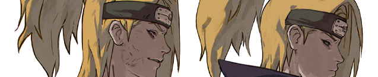
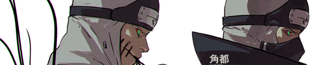
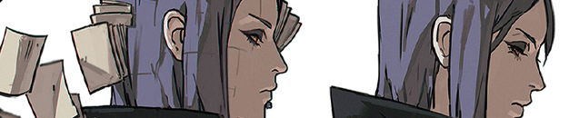
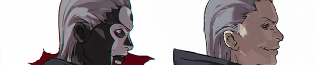
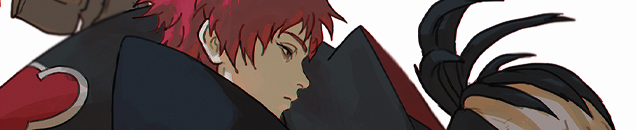

“Somos las cenizas de un fenix que alguna vez fue el más brillante de todos”. Veinte años han pasado desde que la anterior generación logró vencer a Amon, Precursor de la Creación en donde se logró saber que más allá de todo lo conocido existen seres inentendibles que fueron los creadores de todo, sumado al intento de invasión de Letz Batalion sobre las naciones, conllevó a que el mundo ninja se fracturará de manera increible, diezmando la poblacion a niveles inimaginables. Muchos de los ninjas protagonistas de la generación lograron recuperar lo que muchos trabajaron para construir y posteriormente lograron empezar a convivir más en calma al punto de poder crear sus propias familias, dando bienvenida a la nueva generación. Un mundo repleto de historias está por descubrirse con ellos.
Esto es Shinobi Legacy: Next Generation
Carusel de las ultimas noticias
Iniciando en el Foro
Aprende a como empezar, como utilizar el foro y tambien a como rolear. Este apartado es necesario para nuevos usuarios.

Plantillas de Roleplay
Aquí podras encontrar plantillas de todo tipo para poder utilizar en tus roles, fichas e imagenes.

Foro General
Ingresa al foro para encontrar todos los roles. Aquí podras empezar a rolear.

Tienda
Accede a la tienda ninja donde podras encontrar todo lo que necesitas para tus misiones.

Mapas
Visita nuestro mapa mundial y aprende a como viajar entre naciones.
